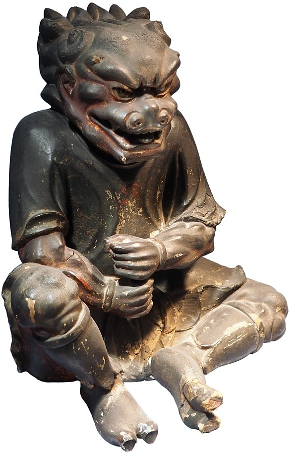

Complete Monster
by
Radaghast Kary
← One-Eyed Shiver
↑Index↑
Oni Mage →

Illustration by Rama,
Attribution-ShareAlike
Oni
also known as
Ogre Mage
is an
Ogre
Members:
Howling Spirit
Oni Mage
Oni Night Haunter
Oni Souleater
General
General links
Oni on Wikipedia
Myth links
Oni on Wikipedia
5e
LE
D&D 5 facts
Size: Large
Type:
Giant
CR: 7
D&D 5 sources
Monster Manual
, p. 239
D&D 5 links
Oni in 5e d20 SRD
Oni on AideD&D
3e
LE
D&D 3.0 facts
Abilities: Str 21, Dex 10, Con 17, Int 14, Wis 14, Cha 17
AC: 18 (-1 size, +5 natural, +4 chain shirt)
Advancement: By character class
Attacks: Huge greatsword +7 melee; or Huge longbow +2 ranged
CR: 8
Damage: Huge greatsword 2d8+7; or Huge longbow 2d6
HD: 5d8+15 (37)
Initiative: +4 (Improved Initiative)
Organization: Solitary, pair, or troupe (1-2 plus 2-4 ogres)
Qualities: Regeneration 2, SR 18
Reach: 5 ft. by 5 ft./10 ft.
Saves: Fort +7, Ref +1, Will +3
Size: Large
Skills: Concentration +6, Listen +5, Spellcraft +4, Spot +5
Speed: 30 ft., fly 40 ft. (good)
Terrain: Any land and underground
Treasure: Double standard
Type:
Giant
D&D 3.0 links
Oni in 3.0 d20 SRD
LE
D&D 3.5 facts
Size: Large
Type:
Giant
CR: 8
D&D 3.5 links
Oni in 3.5e d20 SRD
0e
C
S&W
facts
AC: [15]
Attacks: weapon (+2 for strength)
HD: 5+4
HDE: : 7
Move: 4 (6 when flying)
Special: Magic use, darkvision
XP: 600
S&W
sources
The Blue Book of Dangers and Dweomers
, p. 93
{kind=link}